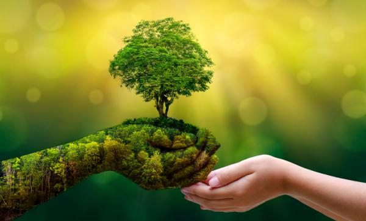

MEDIDAS PREVENTIVAS
- PROHIBIR LA CAZA DE ANIMALES
- Quizás una de las más importantes para llevar a cabo la labor de protección animal. Porque la cacería ha puesto a muchas especies en peligro. Si se trabaja para erradicar la caza furtiva de animales, la amenaza de especies derivada de ella resultaría completamente evitable.Prohibir la caza de animales. Quizás una de las más importantes para llevar a cabo la labor de protección animal. Porque la cacería ha puesto a muchas especies en peligro. Si se trabaja para erradicar la caza furtiva de animales, la amenaza de especies derivada de ella resultaría completamente evitable.
- EVITAR LA DEFORESTACION DE BOSQUES
- Los bosques dan cobijo la biodiversidad que vive en ellos. La tala de árboles está causando estragos en las especies animales. De hecho, muchas de ellas no sobreviven. Otras, en cambio, tienen que migrar hacia entornos o hábitats de los que no son naturales. Esto es lo que está ocurriendo con los osos polares, que han tenido que buscar comida fuera de su entorno natural.
- DELIMITAR LAS AREAS PROTEGIDAS Y RESERVAS NATURALES
- En su tarea por la protección y el cuidado animal, los gobiernos deben actuar para marcar las zonas especialmente vulnerables.Las áreas protegidas como su nombre lo dicen, se encargan de proteger a las especies, los animales, las plantas y demás organismos que habitan los diferentes ecosistemas, esta es una labor muy importante. Además de proteger las áreas, hay una acción que evita que los animales sean afectados, por ejemplo, al prohibir su caza.
Esta acción es determinante, ya que la caza es la principal razón por la cual la mayoría de los animales endémicos se encuentran en peligro, debemos hacer conciencia de la importancia de cada especie y así no acabar con ellos, es terrible que por acciones humanas las especies estén en peligro de desaparecer.
Es importante reflexionar que muchas de las acciones que más dañan a las especies, son hechas por los hombres, quienes afectamos su medio ambiente, explotando los recursos naturales. La siguiente acción, tiene mucho que ver con eso.
- EVIRTAR LA CONTAMINACION DE RECURSOS NATURALES
- La naturaleza es la fuente de recursos más importante del mundo animal. Así, la protección de los entornos naturales se vuelve esencial para crear un mundo más habitable y sostenible.La contaminación del medio ambiente es una de las principales causas de la extinción de animales. Al contaminar, hacemos daño al entorno natural de los animales y aumentamos el calentamiento global. Esto genera que las condiciones climáticas del área donde viven las especies se alteren. Por ello, hay que procurar ser personas limpias y respetuosas con el medio ambiente. Reciclar está en nuestras manos, al igual que elegir alternativas más ecológicas en nuestro día a día.
- PROMOVER PLANES PARA LA REPRODUCCION EN CAUTIVERIO
- La reproducción controlada es una forma muy efectiva de ayudar a ciertas especies. De esta manera, una vez alcanzada una población razonable, se podría reintroducir una especie amenazada en las zonas donde vivía históricamente.
- CONTRIBUIR A LA DISMINUCION DE LA TALA DE ARBOLES CON EL RECICLAJE
- Reciclar es una manera muy fácil de ser sostenible. No hay más que seguir a las instrucciones oficiales para llevar a cabo un reciclaje adecuado.
- COMPRAR CON RESPONSABILIDAD
- Desde la perspectiva individual, la protección animal comienza con el momento de compra. Al no comprar productos hechos de animales en peligro de extinción o partes de los mismos, puedes hacer que el tráfico ilegal de vida silvestre no sea un negocio lucrativo.Consumir productos que ayuden a evitar la contaminación lo podemos hacer todos desde nuestra casa y en la calle, eligiendo productos que no dañen la naturaleza, por ejemplo, jabones biodegradables, evitar plásticos, no tirar desechos a los ríos. Todos podemos contribuir a cuidar nuestros ecosistemas y evitar la pérdida de especies.
Sin embargo, hay una acción que también ayuda a la conservación de las especies sobre todo las que están en peligro de extinción: promover planes para la reproducción de especies en cautiverio . Esta acción consiste en llevar a un macho y una hembra de alguna especie en riesgo a un lugar parecido a su hábitat donde los cuidarán para que se reproduzcan y con ello sumar individuos a la población. Son programas que llevan a cabo diferentes organizaciones para preservar alguna especie.
